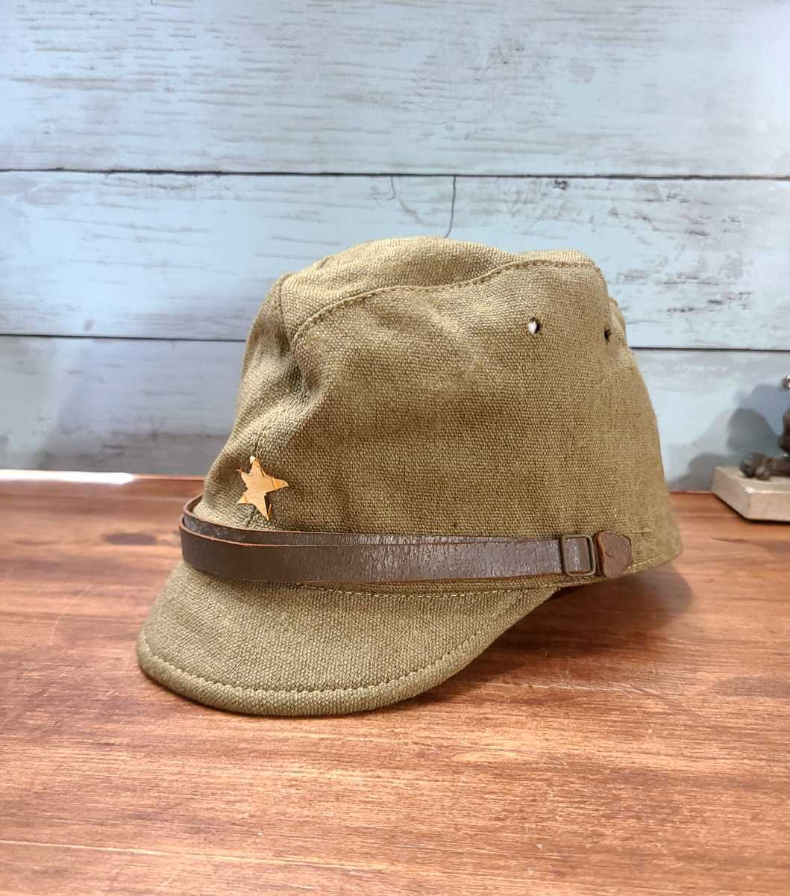
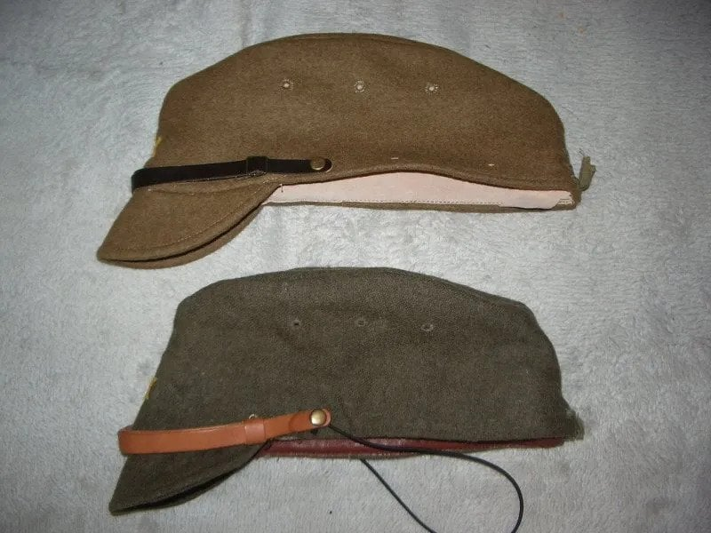
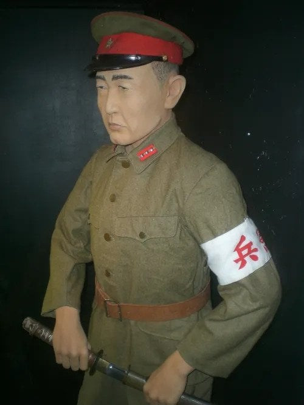
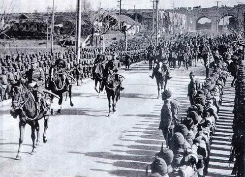
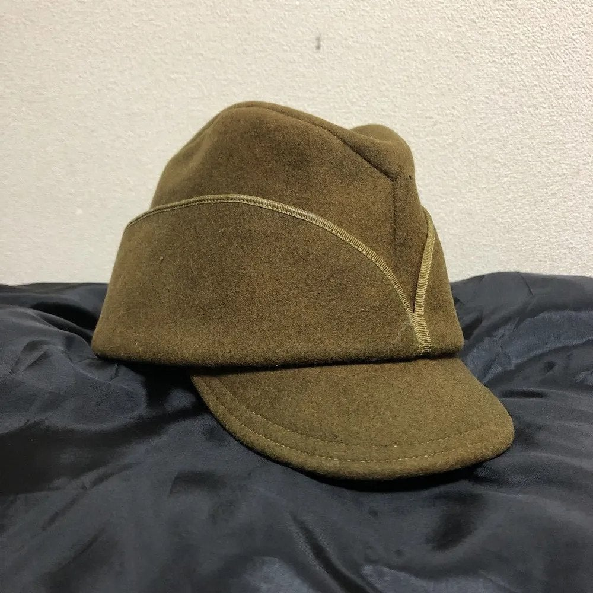
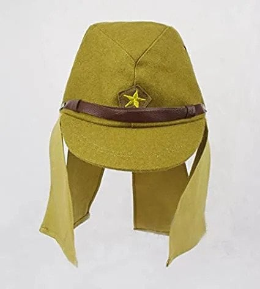
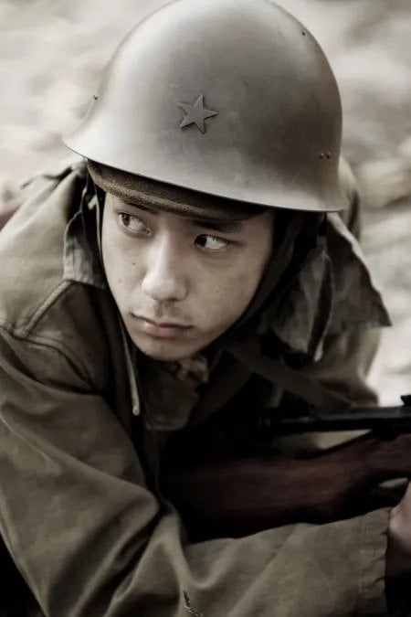
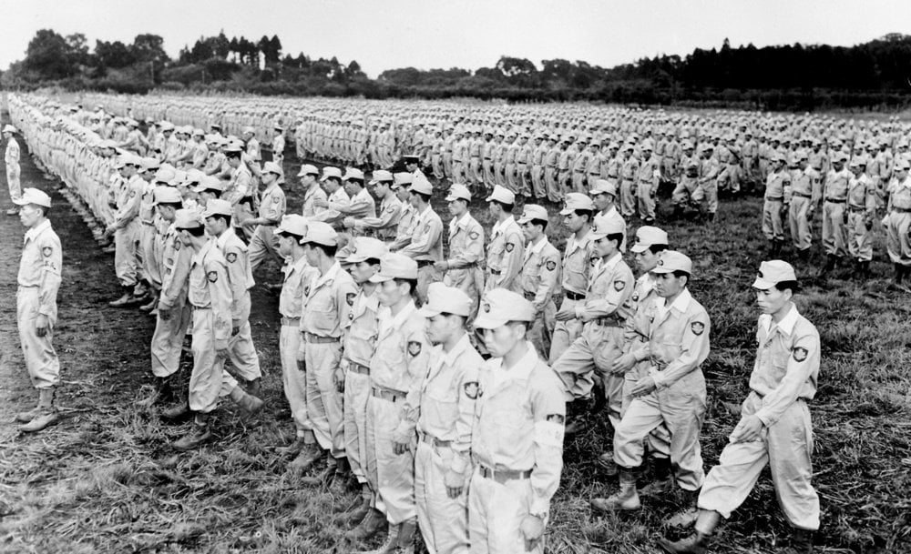
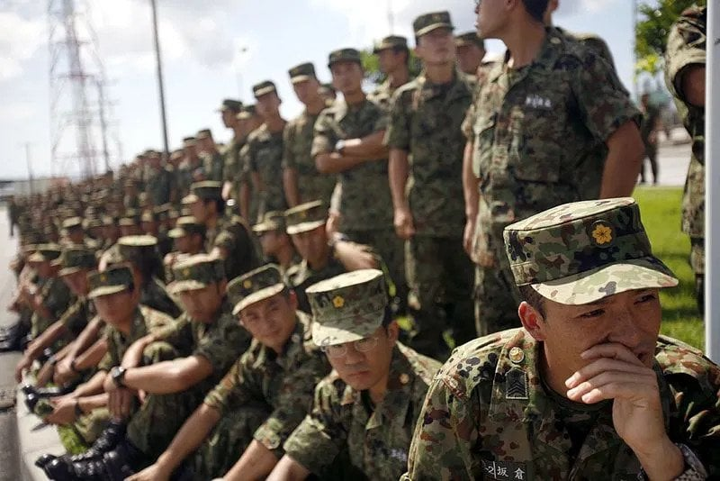

'일본군의 전투모' 하면 우리는 흔히 사진 속의 전투모를 떠올린다.

해당 모자의 이름은 '국민모'로 1930년대 말 부터 도입된 전투모다

원래 프로이센군의 영향을 받은 일본군은 병, 간부 가릴것 없이 정모를 착용했으나

중일전쟁의 장기화 및 무더운 남중국 전선의 기후로 인하여 정모의 불편성이 대두되자

일본 군부는 개리슨 모를 참고하여 모자 챙이 달린 '국민모'를 보급했다.
이후 1940년대 부터 물자 절약을 위해 디자인이 간소하게 바뀌었으며

태평양 전선에서는 모자에 천을 달아 목이나 후두부, 뺨 부분에 쬐이는 햇빛을 가렸으나

효과가 좋았던 나머지 대부분의 장병들은 모자를 쓴 채 철모를 착용했다고 한다.

패전 이후 자위대의 전신인 '경찰예비대'에서도 국민모를 잠깐 사용했으나

1960년대부터 미군식 전투모, '패트롤캡'으로 변경되었다.
같이보기: https://www.dogdrip.net/730007771 (일본 해군에 사관학교 명칭이 없었던 이유)
우리나라도 디지털 군복으로 넘어갈때 패트롤캡 고려되긴했는데 기존 전투모 형식을 고집해서 나가리 개인적으로 바뀌었으면 좋겠는데..